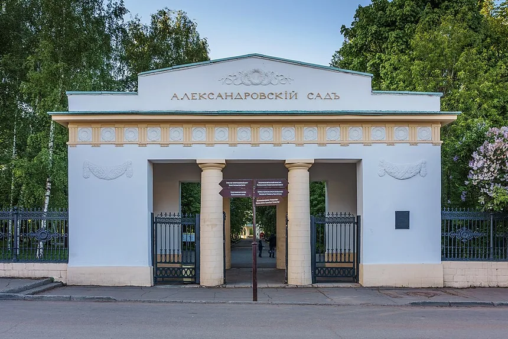
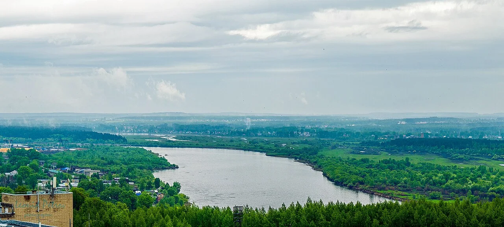
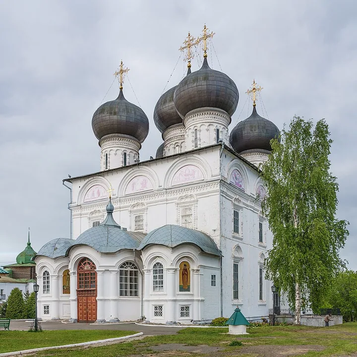
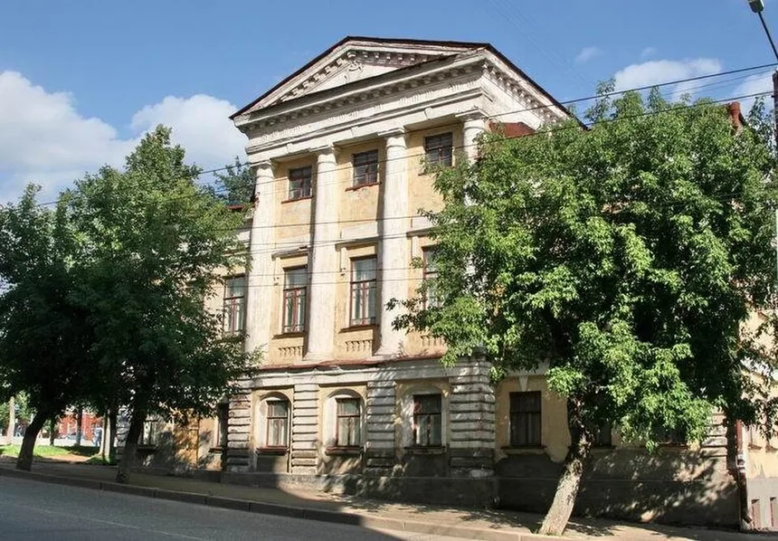
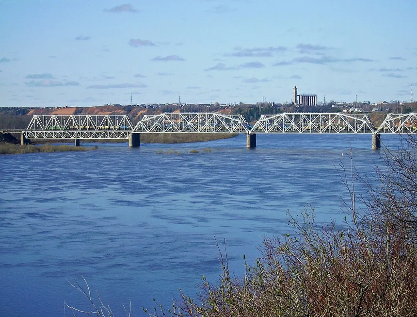

Александровский сад
Исторический парк Кирова расположен над Вяткой. С площадок у его ротонд виден речной простор.
Лесные берега Вятки, расписная дымковская игрушка и следы древних животных, живших задолго до появления динозавров.

Кировская область занимает большую часть бассейна Вятки. Её центр носил имена Хлынов и Вятка, прежде чем стал Кировом. Исторические города области хранят следы речной торговли, купеческой жизни и местных промыслов.
Вятская земля вошла в состав Московского государства.
Учреждено Вятское наместничество. Хлынов получил имя Вятка.
Вятское наместничество преобразовано в губернию.
Город Вятка переименован в Киров. Образован Кировский край.
После принятия новой Конституции СССР Кировский край преобразован в область, а Удмуртская АССР выделилась из его состава.

Исторический парк Кирова расположен над Вяткой. С площадок у его ротонд виден речной простор.

В архитектурном ансамбле старой Вятки выделяется пятиглавый Успенский собор конца XVII века.

Музей носит имена братьев Васнецовых. В его комплекс входит особняк купца Ивана Репина — здание с колонным портиком.

На берегу Вятки палеонтологи находят скелеты древних животных. О находках рассказывает палеонтологический музей в Котельниче.
Вятка пересекает область с севера на юг и принимает воды Чепцы и Моломы. В лесах много елей и сосен. В заповеднике «Нургуш» охраняют пойменные озёра и леса.
Дымковские игрушки лепят из глины, белят, а затем расписывают кругами и другими геометрическими узорами. Вятские мастера также известны резными изделиями из капа — нароста на стволе дерева.
На Вятке грибы называют «губами», отсюда название грибного супа — губница. В посёлке Суна из поколения в поколение передают рецепт засолки рыжиков.